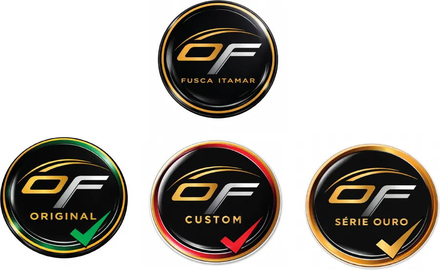
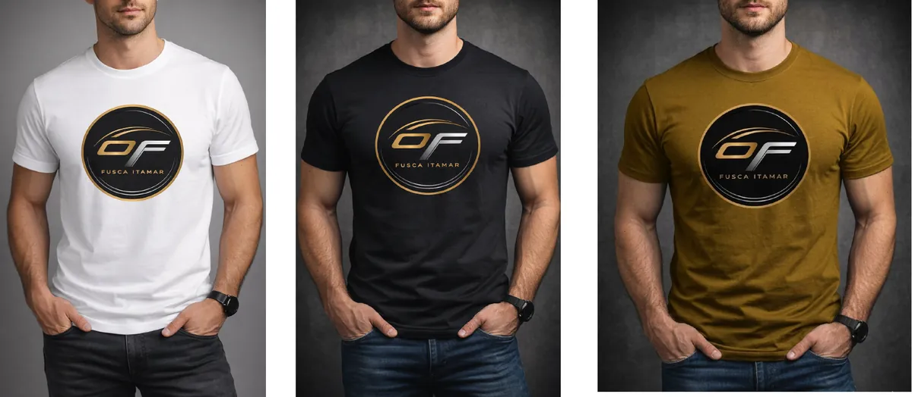
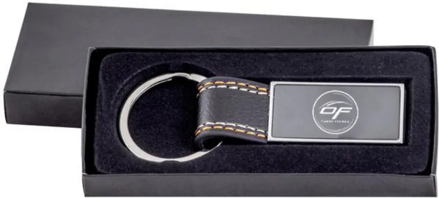
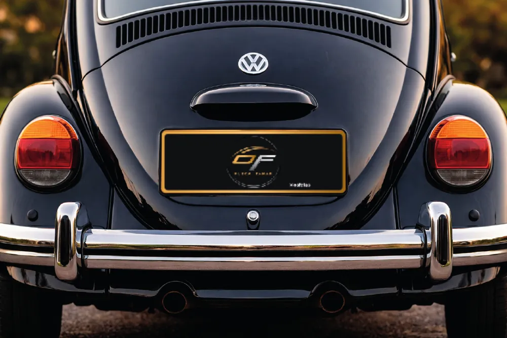

Versão 1 de 4
1993 a 1996
FuscaItamar
O Fusca que voltou pra linha de montagem em 1993 e foi o último feito no Brasil. Aqui tem as versões, as cores de fábrica e os selos OF.
Trazendo o Fusca
Ele voltou em 1993.
A Volkswagen tinha parado de fazer o Fusca no Brasil em 1986. Em 1993 ele voltou pra linha, a pedido do presidente Itamar Franco, e ficou até 1996.
Foi assim que ganhou o apelido. São quatro linhas de ano, quatro versões e dezesseis cores.
1993
1994
1995
1996
Do STD ao Série Ouro
Quatro jeitos de sair da fábrica. Role a página e veja o que cada um trazia.
As 16 cores de fábrica
Toque numa cor e o Fusca é pintado na hora. Embaixo, as linhas em que ela saiu.
Verde Nice
VW 184
Metálica
93/94e 94/94
94/95e 95/95
95/96e 96/96
Série Ouroedição
O asterisco do código 001 está assim na tabela original.
O selo do seu Fusca
Cor escolhida. Falta 2 de 3.
Versão
Selo
Pedir o selo pelo WhatsApp
Mensagem pronta no WhatsApp. É só apertar enviar.
Os selos OF
A marca e os três selos. Toque em cada um pra ver pra que serve.
Marca oficial
Selo Original
Selo Custom
Selo Série Ouro
Onde o selo vai
Imagens de projeto da marca. Peça o seu pelo WhatsApp.




Perguntas
Quais anos são Fusca Itamar?
As linhas 93/94 (e 94/94), 94/95 (e 95/95) e 95/96 (e 96/96), mais a edição Série Ouro. Ou seja, de 1993 a 1996.
Quantas cores de fábrica ele teve?
Dezesseis, todas com o código da VW. Na seção de cores dá pra filtrar por linha e ver o Fusca pintado em cada uma.
Qual a diferença entre STD, Luxo 1 e Luxo 2?
O STD saía sem acessórios. O Luxo 1 trazia espelho direito, volante espumado, relógio analógico, borracha nos para-choques, buzina dupla, porta-trecos, carpete com proteção de borracha e forro de porta acarpetado. O Luxo 2 somava vidros verdes, vidros basculantes, desembaçador traseiro, lanternas fumê e som com rádio.
O que o Série Ouro tinha a mais?
Forro de porta em tecido Pointer GTI, bancos Pointer GTI, faróis de milha Lucas, forro de teto cinza, volante do Gol GL, painel de fundo branco com iluminação verde e som sem rádio, além dos itens do Luxo.
Qual selo combina com o meu Fusca?
Original pro Fusca do jeito que saiu da fábrica, Custom pro que foi modificado e Série Ouro pra edição Série Ouro. Na dúvida, manda foto pelo WhatsApp.
Como eu peço o adesivo, a camiseta ou o chaveiro?
Pelo WhatsApp. Cada botão do site já abre a conversa com a mensagem pronta, é só apertar enviar.